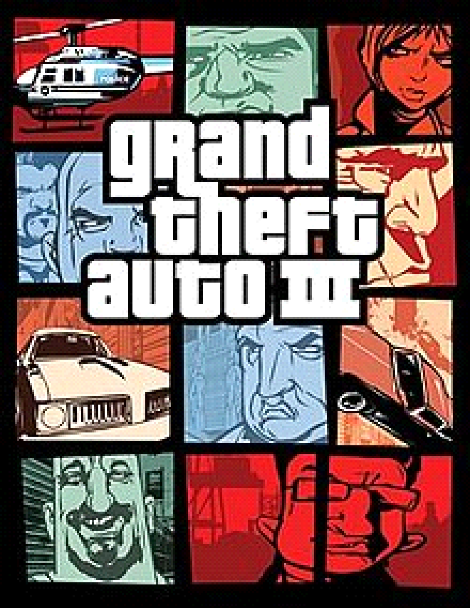

3. GTA III (2001)

Grand Theft Auto III é um jogo de videogame de ação-aventura desenvolvido pela DMA Design e publicado pela
Rockstar Games. É o terceiro título da série Grand Theft Auto e foi lançado em 2001 para PlayStation 2, Xbox e
PC. O jogo é ambientado em 2001 em uma cidade fictícia chamada Liberty City, que é baseada em Nova York.
O jogador controla o personagem principal Claude, um ladrão de carros que é traído pelo parceiro de crime
durante um roubo e passa o resto do jogo tentando se vingar enquanto se envolve em uma série de conflitos e
problemas com outras gangues e figuras do crime em Liberty City.
Como outros títulos da série Grand Theft Auto, GTA III oferece uma jogabilidade aberta que permite ao jogador
explorar a cidade e realizar uma ampla variedade de atividades, incluindo roubar carros, participar de missões
de rápido fogo e cometendo crimes. O jogo também introduziu um sistema de reputação, que afeta como os
personagens no jogo reagem ao jogador dependendo das ações do jogador.
GTA III foi recebido com elogios pela crítica e tornou-se um sucesso de vendas, vendendo mais de 14 milhões de
cópias em todo o mundo. Ele foi seguido por Grand Theft Auto: Vice City, que foi lançado em 2002.
|
|
|